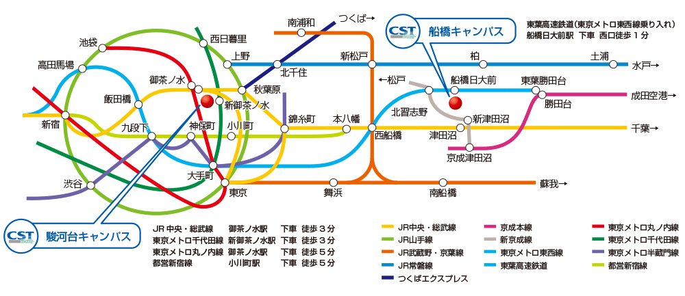
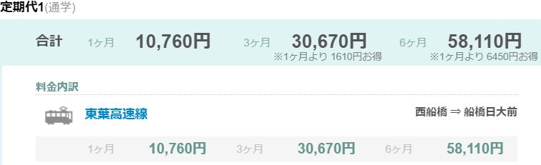
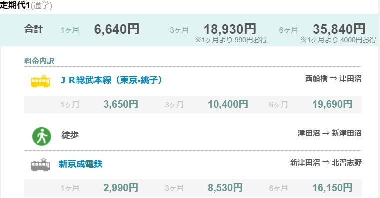

高いなら新京成線を使おう
日本大学理工学部船橋キャンパスに登校する為には、船橋日大前駅を使うほかに、北習志野駅から歩くという方法があります。

これは、理工学部ホームページに掲載されているアクセスマップなのですが、これを見ると「北習志野から歩く」なんてとんでもない距離だと感じるかもしれません。しかし、google先生によると、北習志野駅から大学まで、約19分で歩いて行けるそうです。
更に、こちらの画像をご覧ください。

東葉高速線を利用した西船橋から船橋日大前までの値段

西船橋から津田沼経由北習志野までの値段
上の画像は東葉高速線を利用して西船橋から船橋日大前までの定期券代で、下の画像は津田沼経由での西船橋から北習志野までの定期券代です。この2つを見比べると6か月で約23,000円も違うことがわかります。
4月から10月まで東葉高速線を使わずに、津田沼経由で北習志野駅から歩いて大学に通うだけで約23,000円も浮いてしまうわけです。
23,000円ってどのくらい？っていうとこちらのAmazon欲しいものリストに登録してあるものが買えてしまうくらいの値段です。
「時は金なり」と言いますが、僕的には人生で一番大切なものは大学の単位で、その次に大切なものは時間よりも命よりも金の方が大事だと思っているので、東葉高速線を利用するよりも津田沼経由してニンテンドーSwitch Lite買った方がいいと思います。